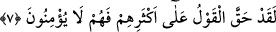
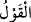
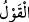
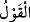

İşte bu sıfatın ehli olanlar uyusalar da hakîkaten uyanıktırlar. Çünkü âriflerin gönül
gözleri uyumaz. Diğer insanlar ise uyanık da olsalar hakîkaten uykudadırlar. Çünkü
onların gönül gözleri açılmamıştır.
Vasâyâ’da şöyle geçer: “Ey Ali! Ölülerle oturma.” Ali (r.a.), “Ey Allah’ın Rasûlü!
Ölüler kimlerdir?” diye sordu. Hz. Peygamber (a.s.): “Câhiller ve gâfiller.” buyurdu.
Allah’ım! Bizi ilim, irfan, îkan, müşâhede ve ıyân ehlinden eyle. Bizi iki cihanda sana
kavuşmakla şereflendir. Bizi dünyâ ve âhiret mülâhazasından çevirip uzaklaştır. Âmîn.
7. Andolsun ki onların çoğu cezâyı hak etmişlerdir. Çünkü onlar iman etmiyorlar.
“Andolsun ki onların” senin kendilerini uyardığın Mekke halkının “çoğu cezâyı hak
etmişlerdir. Çünkü onlar” senin onları uyarmanla “îman etmiyorlar.”
Buradaki “ hakkında ulemâ ihtilâf etmiştir. Bazıları “ onların cehennemlik
olduklarına dâir Allah Teâlâ’nın verdiği hükümdür.” demiştir. el-Müfredât’ta “Allah’ın
onları bilmesidir.” der. Bazıları “ azabdan kinâyedir.” der. Yani onların çoğuna
azab vâcib olmuştur.” demektir. Cumhur ise bununla kasdedilen İblis: “Onların hepsini
mutlaka azdıracağım” (Sâd, 38/82) dediğinde Allah Teâlâ’nın: “Mutlaka sen ve sana
uyanların hepsiyle cehennemi dolduracağım!” (Sâd 38/85) buyurmasıdır. İşte Allah
Teâlâ’nın: “Ama azap sözü kâfirlerin üzerine hak olmuştur.” (ez-Zümer, 39/71)
sözüyle kasdedilen de budur.
Bu söz cinlerden ve insanlardan İblis’e tâbi olanlarla ilgilidir. Allah, Mekke halkının
çoğunun da şeytana tâbi olmakta ısrar eden ve ölene kadar küfrü tercih eden kimseler
olduğunu bildiğinden onlar bu “ (söz)”ün mazmûnu kendileri aleyhinde vâcib ve
sâbit olan kimselerden olmuşlardır. Ancak bu durum kendileri tarafından bunu
gerektirecek bir şey olmaksızın cebir yoluyla olmamıştır. Bilakis onların küfür ve
inkârda kendi irâdeleriyle ısrar etmeleri; öğüt ve uyarılardan etkilenmemeleri sebebiyle
olmuştur. Azap hükmünün (sözün) sâbit olup onlar hakkında gerçekleşmesi onların
ölünceye kadar küfür ve inkârda ısrar etmelerine bağlı olunca, Allah Teâlâ’nın “Çünkü
onlar iman etmiyorlar” sözü de gerçekte azab hükmünün sâbit olmasına değil onların
küfür ve inkârda ısrarlarına bağlanmış oldu.
Kâşifî der ki: “Kasdedilenler, Ebû Cehil ve arkadaşları gibi Allah Teâlâ’nın küfür
üzere veya şirk üzere öleceklerini bildiği kimselerdir.”
Bu makamın hakîkati şudur: “Saîd olsun şakî olsun şu dünyada herkes istîdad ve
kabiliyetine göre hareket eder. Allah Teâlâ onların amellerinin safhalarına göre hallerini
ortaya koyar. Kulları hiçbir konuda icbâr etmez/zorlamaz. Onun için kim bir hayır
bulursa, Allah Teâlâ’ya hamd etsin. Kim de başka bir şey bulursa kendi nefsinden